Case study 1.1 Hoxton AI 2021–2023
A more measurable world,
designed end to end.
Hoxton AI built a self-install computer vision system that counts people: traffic past the door, people through it, occupancy inside, and, with sales data, the funnel in between. For two years I was the design lead across the brand, the product, the research, the marketing, and a good share of the front-end code.
The product
Cheap smart cameras, installed by the customer, feeding a computer vision platform. The output is data that a store or venue manager can act on the same day.
What Hoxton did, and why it was different.
Traditional people counting meant surveyors, engineers, site visits and a project plan running into weeks. Hoxton's cameras arrived in the post, were fixed up by the customer in half an hour, and started reporting the next day.
The positioning I set out in the brand guidelines put that plainly: the only computer vision system that can be self-installed, for forward-thinking businesses in physical spaces who want to make data-driven decisions. Low cost, easy installation and a retail focus, and only Hoxton offered all three.
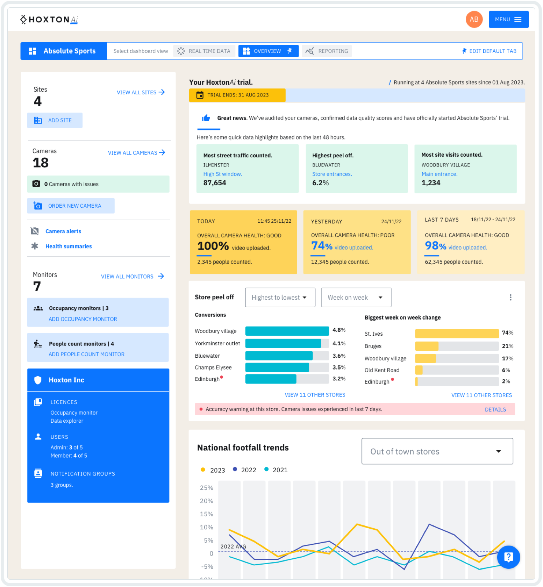
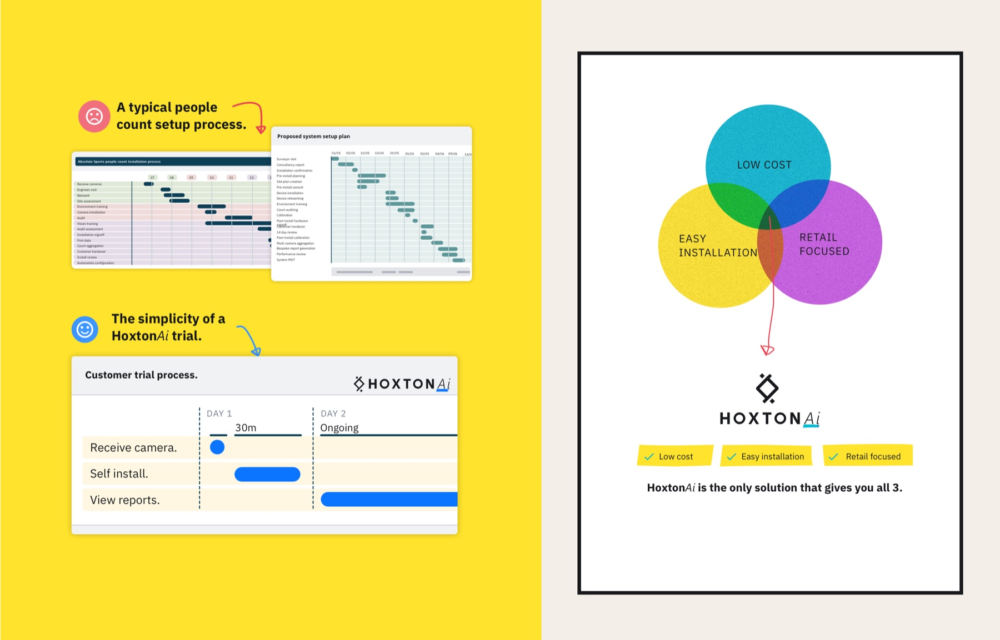
A brand from scratch
Startups rarely arrive with a brand. I wrote and designed Hoxton's, from mission and voice through to logo, colour, type, illustration and photography, and set it down in the 2023 brand guidelines.
To make a more measurable world.
Voice before visuals.
Hoxton was a technical company selling to non-technical people. The guidelines cast it as a Sage brand: authoritative and expert, an educator, an encourager of other people's ideas. Colourful and bold in tone, confident and approachable, never shy about explaining what the technology does, always looking for the plain way to say it.
Six principles governed every piece of copy, from a button label to a whitepaper.
- Be positive.
- Talk about solutions, not problems. Become a product people want to use, not one they feel obliged to use.
- Be understood.
- Leave users feeling empowered to use the product to its full potential.
- Be concise.
- Attention spans are short. Make sure the message gets read.
- Be consistent.
- Show a clear understanding of who we are and what we do.
- Be unique.
- Avoid anything generic that could be said about any other people-counting solution.
- Be witty.
- Snappy, compelling copy that avoids corporate jargon. Express personality.
Colour, held to rules.
Yellow is the most Hoxton colour and leads on strong brand pieces. Black, neutral, turquoise, midnight and azure carry the product. A secondary set is for supporting roles only, and every colour has four tints reserved for illustration and charts, never for backgrounds or text. Those tints fed a separate set of data visualisation guidelines for the dashboards.
The swatches here are drawn live from the brand's own values.
Logo, type and illustration.
A square logo by default, a horizontal one where vertical space is tight, and a hard-working boxed version for the rare occasions the mark has to fight a busy background. Shown only on brand colours, white by default.
IBM Plex Sans for everything written. Sentence case throughout, including headings, which end in a full stop. Eyebrows and labels capped at 14px with tracking opened a touch. Text left-aligned, never centred. And when the company name appears in a sentence, the Ai is italicised. Small, deliberate, and the kind of detail a data company should be seen to care about.
Illustration is isometric, built from a small set of reusable assets in the brand palette that could be recombined with different people and data overlays. Stock photography, when unavoidable, gets cropped hard and overlaid with yellow.
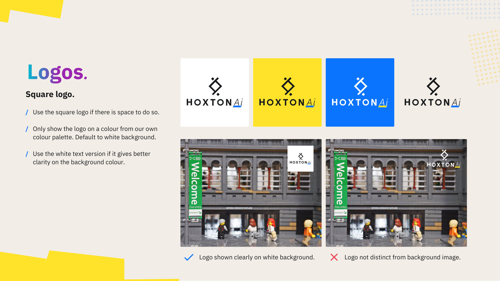
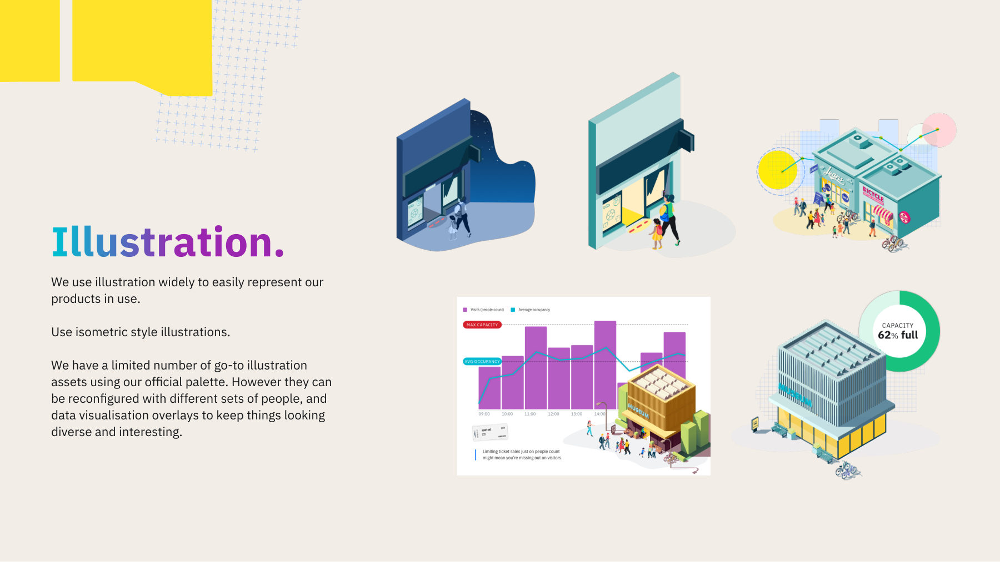
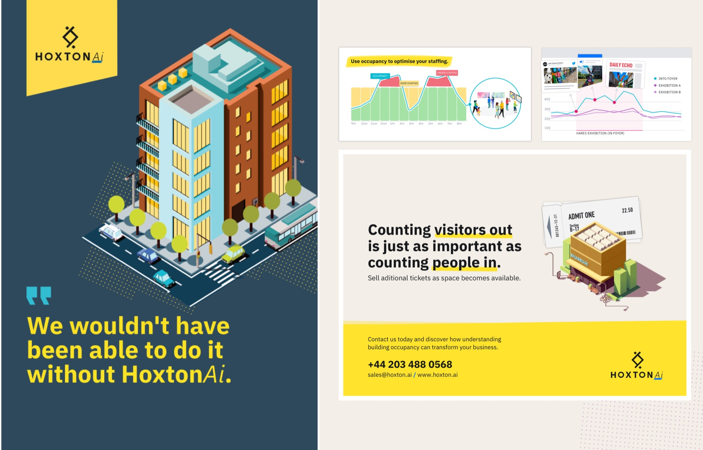
Designing the product
Three problems, worked from research through to shipped interface: getting customers to live data faster, reporting they could act on, and winning over the people the data was about.
From box to live data, faster.
Every customer had to physically set up cameras in the sites being monitored, and we knew from support conversations where that hurt. I kept iterating the setup journey, the dashboard states and the documentation together, so that the time from a camera arriving to data going live kept shrinking.
The trial welcome page became the anchor: one screen that says what happens next, and shows every participating site moving through camera setup, audit and reporting setup, with the blockers called out.
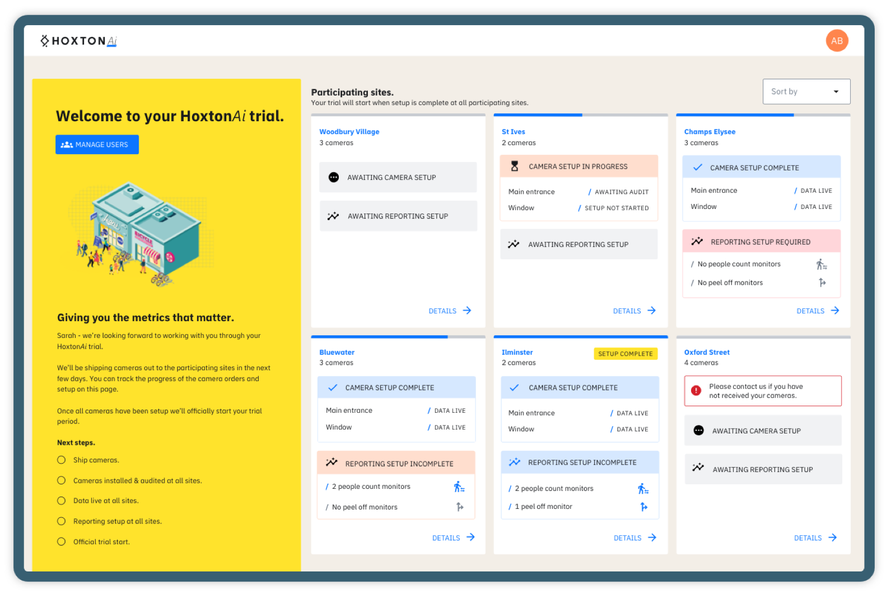
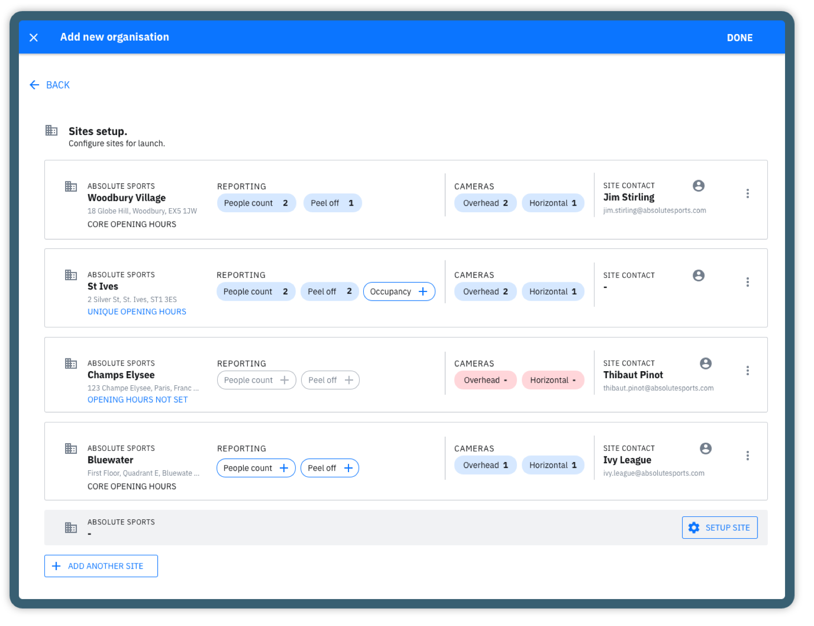
Reporting people can act on.
Customers could get at every metric in the control room, live and historical. Through frequent user feedback sessions I shaped dashboards around the specific questions each group actually asked: how full is the gallery right now, which store is peeling off passing traffic, where is the data I should not trust.
That last one mattered. Camera issues were surfaced inline, with accuracy warnings and gaps marked on the charts, rather than hidden behind clean-looking numbers.
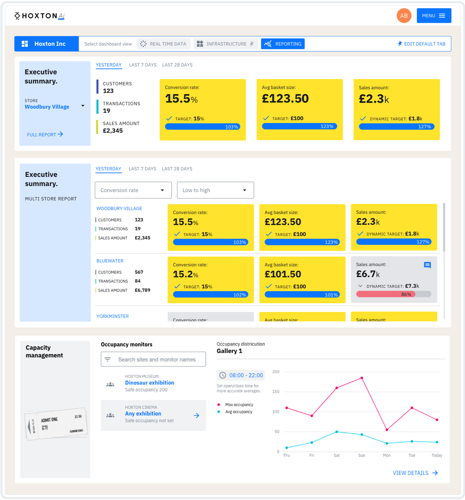
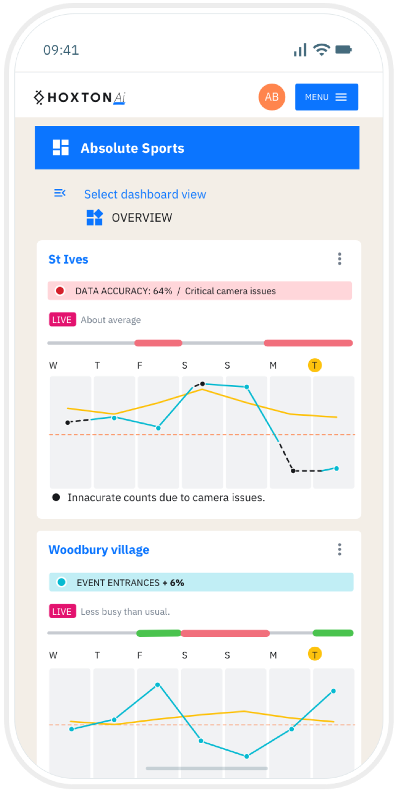
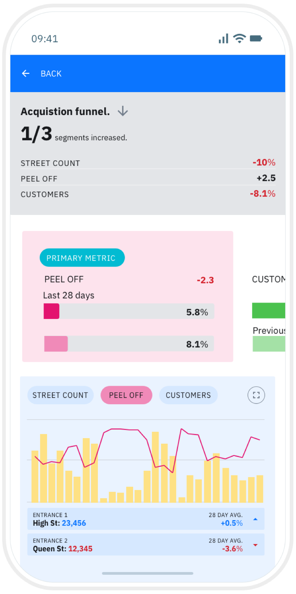
Winning over store managers.
Researching audience personas, I found that retail store managers were resistant to the product. They assumed head office would use it to set them unrealistic targets, and a tool the people on the floor distrust does not get used.
My answer was a feature, not a screen: the executive summary with dynamic targets. Targets are forecast from each store's own street traffic and history, with a confidence level shown, so individual stores are evaluated fairly on the metrics their staff can actually influence. Conversion and basket size, not how many people happened to walk past.
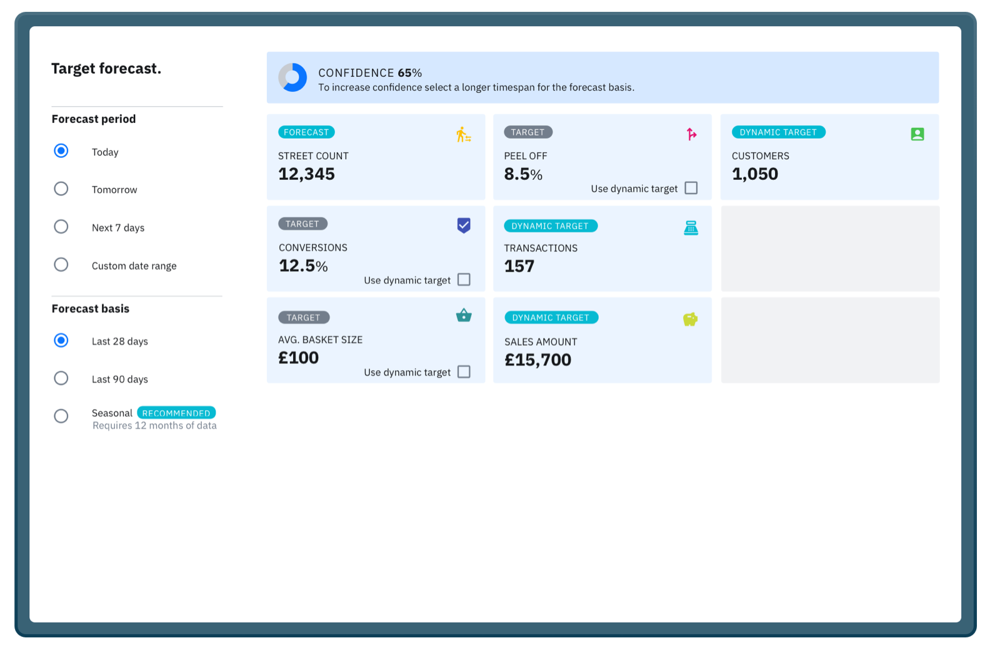
Building it, not just drawing it
In a startup the design role is wider than the title. Much of the value I added at Hoxton was in product development and in code.
What the job actually involved.
- Feature ideation. Dynamic targets and the executive summary came out of persona research I ran, not a ticket. So did the trial welcome page and the inline data-quality warnings.
- Front-end implementation. I wrote production CSS and front-end markup for the interfaces I designed, working alongside the engineers, so screens shipped as designed and the components stayed consistent as the product grew.
- Research and feedback loops. Regular customer sessions fed directly into the dashboards, the setup journey and the documentation.
- Documentation and content. Setup guides, the brand guidelines, data visualisation guidelines, and long-form content marketing.
- Integrations and channels. Extending the data beyond the control room: a weekly retail report by email, and store metrics inside Shopify.
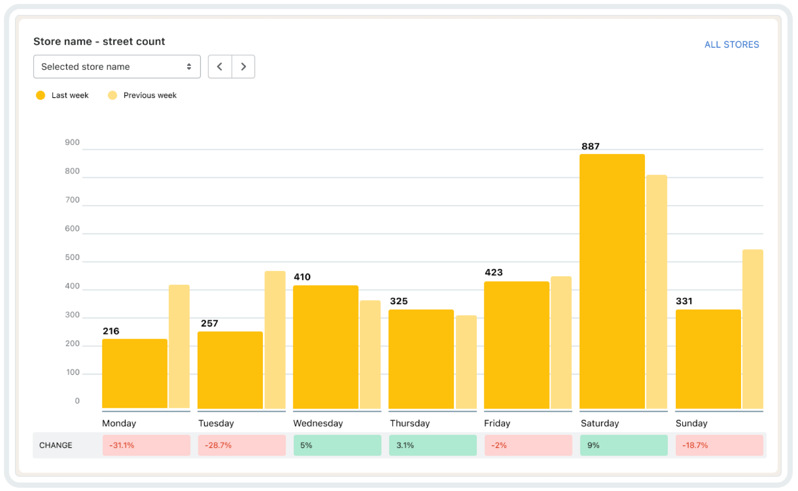
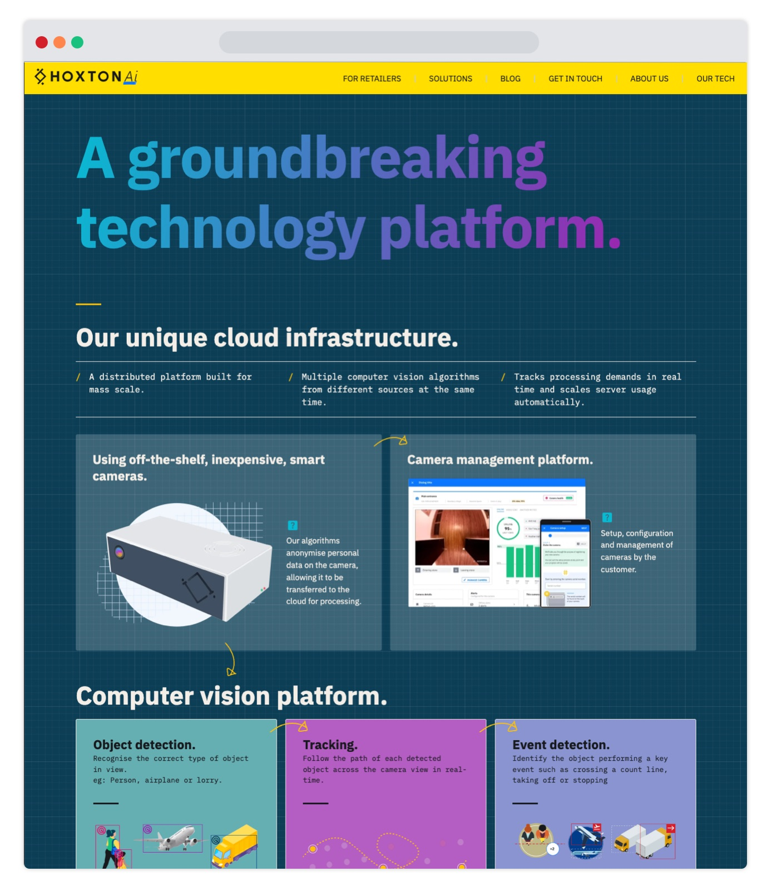
Marketing and content
The same brand system carried the website, campaign graphics, sales decks and a whitepaper, all designed and mostly written in-house.
Showing the product working.
Most of the marketing graphics had one job: make a data product feel concrete. The retail site leads with the weekly report and the funnel it exposes. Social pieces showed occupancy against staffing, or ticket sales against real capacity. The isometric illustrations let us picture a shop, a museum or a whole high street without a single stock photo of a person pointing at a screen.
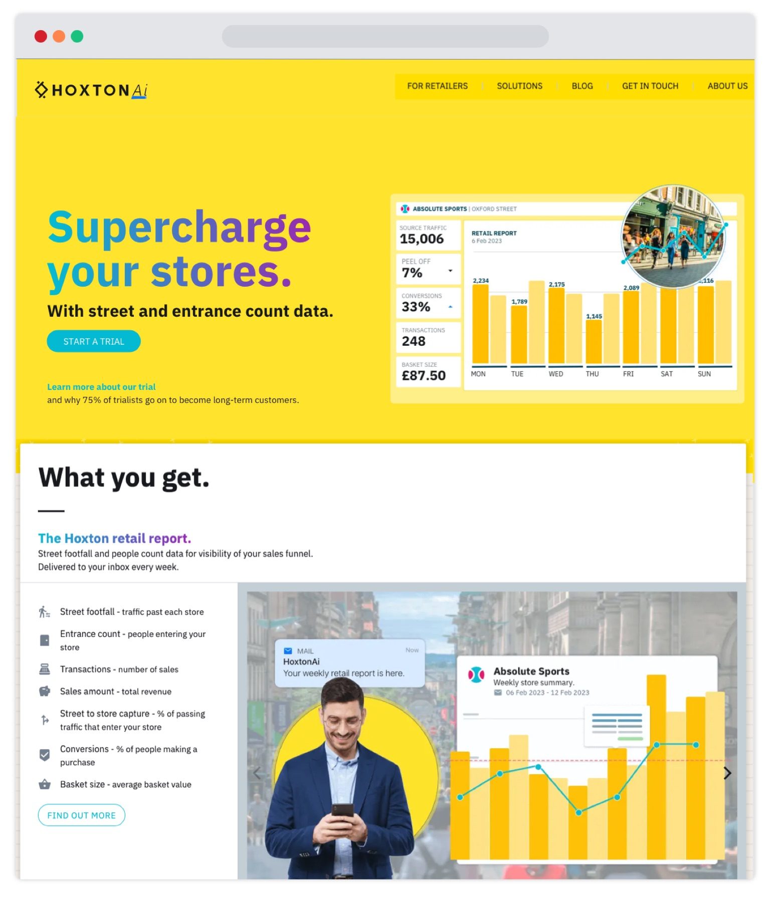
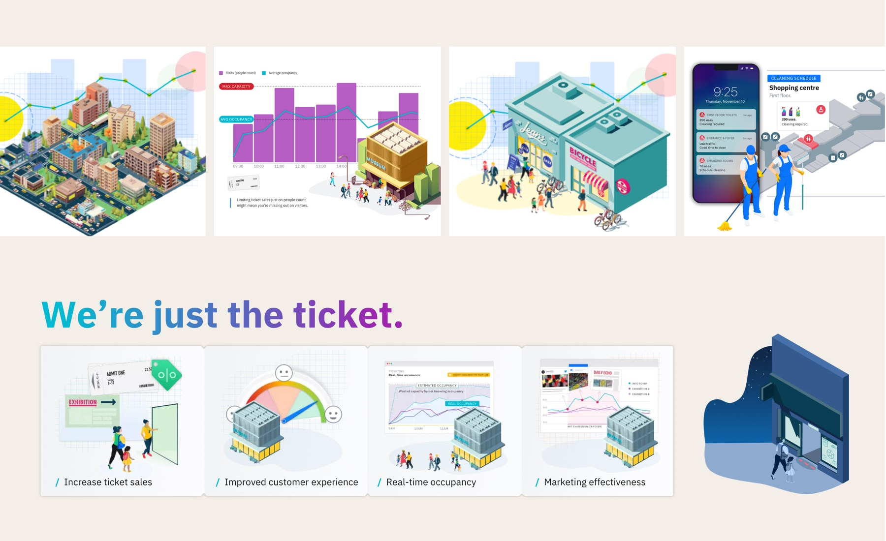
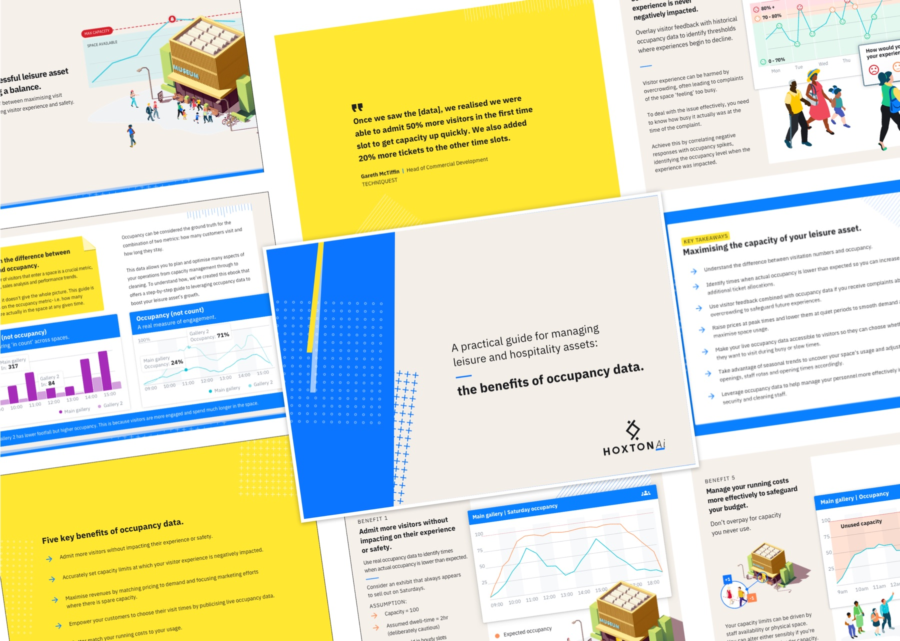
By discussing it with management, we’re able to easily stay on top of the numbers that matter, and focus our efforts on driving in-store success, rather than on processing data.
What this shows
Complex data, made usable.
Live and historical counts, funnels, forecasts and data quality, designed for store managers and venue operators rather than analysts.
A brand from nothing.
Mission, voice, positioning and a full visual system, documented well enough for a small team to apply it without me in the room.
Shipped, not handed over.
Features I originated from research, and interfaces I built in production CSS and markup alongside the engineers.